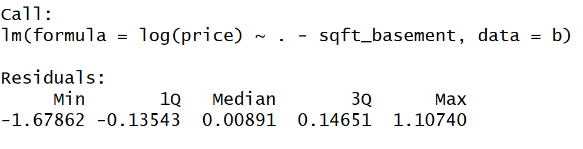
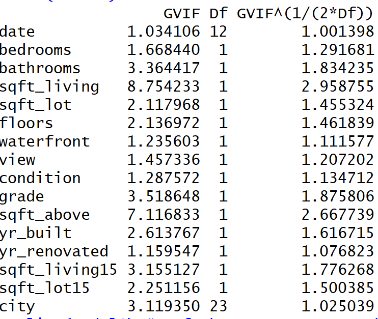

by Jaspreet Kang
In this article, we will do a quick run through on how to create a proper linear regression model, with an emphasis on checking model assumptions such as normality, linearity, constant variance of error terms, and the steps to fixing any violations of these model assumptions. The dataset explored in this write-up is a housing dataset in Kings County, Washington which includes Seattle and the cities surrounding Seattle such as Federal Way, Burien, and more. It contains house sale prices sold between May 2014 and May 2015. Each row in the data set is a different house that was bought during our observational period. There are a total of 21,613 houses (or observations) and 21 variables. The variables are:
There are a few variables here we are going to adjust to make our dataset more simple. First off, we will get rid of ID since it is a useless variable. Secondly, the variable date is a factor variable that is inputted oddly. For example, a house with the date 'October 13, 2014' is inputted as '20141013T000000'. For some reason, the string 'T000000' is attached at the end for all the observations. Additionally, we are not interested in the exact date, but only interested in the month and date. We can easily fix this by using the substr function. We will substring the first 6 strings and get rid of the rest, and replace this with the original Date variable. By doing this, we reduced our number of levels from 372 to 13 levels, which allows us to see if date has a significant effect on house prices. The last adjustment we will make is convert Zip Code to a city using the library Zipcode in R, and get rid of Zip Code, Latitude, and Longitude altogether for simplicity sake (you could use spatial statistics since we are given coordinates). The R code is shown below:
Luckily, no NA values exist in this dataset. In most cases, you will be dealing with plenty of NA values, which requires extensive data cleansing. In this case, no data cleansing will be needed. Now that we slighly adjusted our dataset, we are ready to get into modeling!
First, we will look at the histogram of our predictor variable, Price. My hunch is it will require a log transformation since there will be houses priced much higher than the average.
As you can see, the histrogram shows a distribution highly skewed to the right.
Taking the log transformation, and we see we get rid of most of the skewness, causing the distribution to become relatively normal. Now we can create our linear regression model of Log Price using all the predictor variables, and check for violations of model assumptions.
First, we will create our model using the lm function in R, and use stepwise selection to finalize which predictors should be in our final model. Stepwise selection or regression is an automatic procedure for statistical model selection in cases where there is a large number of potential explanatory variables. It is very simple to do in R. The code is shown below:
Stepwise selection removes one variable: Sqft Basement. So now our model becomes log(Price) = all of the predictor variables minus Sqft Basement.
Building a linear regression model is only half of the work. In order for the model to actually be usable, our model should not violate the assumptions of linear regression, which are:
Some of these assumptions are redundant and can be checked in one or two plots. For example, you can check homoscedasticity by looking at a residuals vs fitted values plot and if the points are scattered randomly (meaning without a pattern) around zero, then we can check off homoscedasticity and say the mean of the residuals is zero.
The first assumption we will check for is multicollinearity. To check for multicollinearity, we look at the Variation Inflation Factor (VIF) of each predictor variable. The VIF is the ratio of variance in a model with multiple terms, divided by the variance of a model with one term alone. In simpler terms, it measures how much the variance of an estimated regression coefficient increases due to collinearity. You can do this easily in R by downloading the library 'cars' and using the function 'vif'. If the VIF is greater than 5 for two or more variables, then we remove one variable at a time and check the VIF again until all the VIF values are below 5.
The VIF's for Sqft Living and Sqft Above are both greater than 5. It is important to note that removing both variables from the model is a bad idea. Instead, we will construct two models that removes Sqft Living and keeps Sqft Above, and vice versa in the second model. When removing only Sqft Above, the VIF of Sqft Living remains greater than 5. When removing only Sqft Living, the VIF of Sqft Above drops below 5. Therefore, we decide to create a new model that keeps Sqft Above, but removes Sqft Living, making our new model: Log(price) = all predictor variables - Sqft Living - Sqft Basement
Now that we've addressed multicollinearity, we can check the rest of the assumptions. First, we'll check the linearity assumption by plotting the model's fitted values against the observed values of price.
We can see that the graph looks linear for the most part, but there are signs that a quadratic function may fit better than a linear function. Therefore, the assumption of linearity is violated.
The plots above help us look at 3 assumptions: The mean of the residuals is zero (top-left plot), Homoscedasticity (top-left and bottom-left plots), and normality of residuals (top-right plot). No pattern seems to exist among the residuals and the mean of the residuals seems to be equal to zero, if not then a little under zero. However, looking at the Normal Q-Q plot, we see that both tails separate from the line. This violates the normality of the residuals, and hints at possible outliers. We can confirm the possibilty of outliers in the data by looking at the bottom-right plot. Cook's distance is a measure for outliers in the data. In conclusion, our model violates two assumptions: linearity and normality of the residuals. To address these violations, we will first create a new model without the extreme outliers (calculated with Cook's distance method), and then re-check the model's assumptions.
After using Cook's distance method, 982 outliers were detected. There are several ways to deal with outliers, such as deleting the observations altogether, converting them to the mean (or median or mode), or creating another model to predict these observations. In this example, we will delete the observations altogether. Deleting 982 observations seems like a lot of wasted observations; however, there are 21613 observations in the dataset, so we are only getting rid of less than 5% of the data. Next, we create our model without the outliers.
Our r-squared value went up slightly from 0.76 to 0.80 with the same amount of predictor variables, which is a good thing. Next step is to check if we corrected the violations of linear model assumptions.
Looking at the plots above, our model became more linear, and the Normal QQ-plot also looks more linear, which means the residuals follow a normal distribution. Since our model does not violate any of the assumptions, we can take a closer look at the performance of our model.
The mean of the differences in Observed Prices and Predicted Prices comes out to around $40,000 which is not bad at all! Obviously with a deeper inspection and analysis, we can yield better predictions. For example, subsetting the houses into their respective cities and creating models to predict houses prices within each city would likely give us more accurate predictions. But the goal of this article was to show how to quickly create a linear regression model, check for its assumptions, and fix any violations of these assumptions. Thanks for reading!